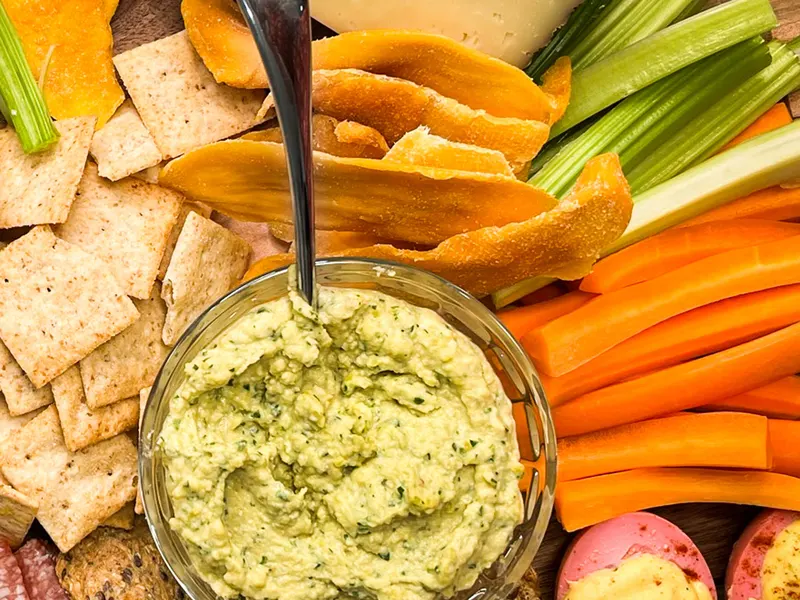

Home / Recipes / Lemon Asparagus Hummus
Lemon Asparagus Hummus
Made with Byler’s Pickled Asparagus. Serve it as a hummus duo with Beet Hummus.

Home / Recipes / Lemon Asparagus Hummus
Made with Byler’s Pickled Asparagus. Serve it as a hummus duo with Beet Hummus.
